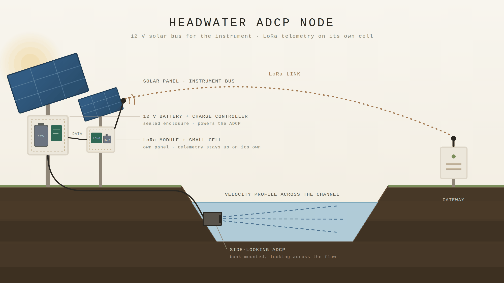

In the sky
A forecast engine watches radar, rainfall, and how saturated the ground already is, then estimates how the creek will respond — hours before it does. In these mountains, rain squeezed up over the ridges is what turns a stream dangerous.
SDAP Research Seminar · College of Engineering · Western Carolina University
A sensor-to-warning flood and landslide intelligence system — starting with Cullowhee Creek, growing to Jackson County and Western North Carolina.
Cullowhee Creek · Jackson County, NC
fresh·et n. — a great rise or overflowing of a stream caused by heavy rains or melted snow. First known use 1598, from the obsolete fresh, “a stream in flood.” Merriam-Webster · NWS glossary · Etymonline
NOAH in the water · SKYE in the sky · TERRA in the ground
A flood warning for a mountain creek that never had one.
After Hurricane Helene, the streams that flood fastest in these mountains still had no gauges. This puts sensors in the water and weather in the picture — to buy the one thing that matters in a flash flood: a little time.
The operator's question
A 200-year rain produced a 9-year flood — because it fell over three days onto dry ground.Helene at the campus reach · ~2,274 cfs · ~8.4 ft · runoff ratio 0.41
A rainfall total on its own says very little. Ten inches over three days is survivable here; the same ten inches in six hours is not. What decides it is how long the rain lasts and how much water the ground can still absorb — and the second one changes week to week. Helene delivered roughly two-hundred-year rainfall onto drought-dry soil and produced about a nine-year peak. The rain was extreme; the ground was merciful.
This panel answers the question directly, live: given today's soil and a storm of the length you choose, how many inches would it take to reach watch, warning or emergency in each sub-basin. Rain is delivered in the hourly pattern Helene actually had, not a synthetic design curve — because the difference between those two is a factor of one-and-a-half to four.
A planning aid, not a warning — thresholds are modelled, and for seven of eight reaches the stage behind them is not yet survey-validated · wetness is held constant through the storm, so long events are under-predicted · open the rainfall panel full screen
Three layers, one system
A forecast engine watches radar, rainfall, and how saturated the ground already is, then estimates how the creek will respond — hours before it does. In these mountains, rain squeezed up over the ridges is what turns a stream dangerous.
Solar-powered sensors along the creek measure how high and how fast it's running, and relay each reading out by radio, cellular, and satellite — so a measurement gets through even when the power is out and the roads are gone.
Satellite radar reads the hillsides from orbit, measuring millimetre-scale creep across the whole watershed every twelve days — looking for the slope that starts moving before it fails. Helene broke these mountains loose as much as it flooded them; this layer watches for the next one.
Python engine on the server · JavaScript in the live map · the rainfall panel — three implementations, cross-checked in CI on every push (7,040 evaluations, zero disagreements)
amber — an input the model estimates today and a NOAH sensor will replace · cyan — measured · the sensors change the inputs and the validation; the seven steps stay the same.
Forecast evidence can raise a WATCH and nothing more. WARNING and EMERGENCY require a measured rise.Today one gauge in the watershed can measure a rise — so one gauge is the only thing that can raise anything above WATCH, anywhere.
Rule twoAbsent data renders as absent — never as severe, never as normal.Both mistakes were found in this code and fixed. It is a rule because it had to be.
Where FRESHET makes the difference
The National Water Model held 10.94 cfs for 47 hours through a measured 1.36 ft rise at Speedwell.Continental model, 23-square-mile mountain watershed · the gap the network closes
Built on the federal and state models, not instead of them. FRESHET ingests NWS forecasts and QPF, NOAA MRMS and FLASH, the National Water Model, USGS gages, NCEM FIMAN and NC FRIS flood profiles — and adds the one thing none of them have: measurement inside this watershed at storm cadence, evaluated locally. The federal and state system tells Cullowhee a storm is coming; FRESHET tells Cullowhee what the creek will do when it gets here. Five days out, the National Hurricane Center, the Weather Prediction Center and the Weather Service already do the forecasting — and nothing here tries to do it better. What no product covers is the last forty-eight hours on this creek: which of eight reaches rises first, how many hours the campus has after Cox Branch, and whether the rise is measured or modelled. The whole watershed has one state gauge, at Speedwell, and it reports height with no rating.
Five-day track and cone, the excessive-rainfall outlook, the county flood watch. FRESHET mirrors this layer — the storm-track watch below tests their track against one fixed corridor gate, and a hundred years of best tracks give a heads-up days before a forecast commits.
The storm's rain on each basin's measured soil moisture gives the inches still needed to reach WATCH, and the hour each reach gets there. The gate crossing itself buys only 0–42 hours before the storm's closest approach, so it is the last checkpoint, not the first.
Stage nodes and the Speedwell gauge. Only a measured rise earns WARNING or EMERGENCY. Storm size on wet ground justifies a call to NCEM to pre-position and open the EOC; the word evacuation waits for water that has actually risen.
Helene 2024, reenacted on the validated rain record — forecast track through the gate ≈ 2 days before the rain Cox Branch reaches WATCH at T+63 h campus WATCH at T+72 h center over the gate, campus peak 8.4 ft, Speedwell measured 8.86 ft at T+90 h
Every proxy in the model is a placeholder for a sensor that isn't in the ground yet.Wetness on Helene's day: fitted anchor 0.248 · measured 0.53 · worth 1.0–1.7 inches of uncounted rain at the campus 2-yr line
Storm track watch
The storm track is not a posture. It is a wake-up call.Tracks, cones and advisories are NOAA / NHC products, shown as issued · FRESHET adds the gate and the readiness floor · a mode changes only how often the system looks — never a threshold, never the WATCH cap
Live National Hurricane Center guidance for the Cullowhee corridor. When a tropical system's forecast track crosses the corridor gate west of −83.2°, the system raises its readiness floor — days before the first drop of rain. A what-if mode replays Helene, Frances, and Ivan through the same criterion. Four alarms, not one: the corridor (NHC track plus HURDAT2 analogs), the WPC excessive-rainfall outlook, the wetness trend, and the forecast margin to the inches-to-WATCH line.
Display mirror of the backend corridor criterion — the authoritative posture floor is computed server-side · data: NOAA/NHC, polled every 15 min · open the storm watch full screen
Current conditions
Six of eight basins have under two hours of lead time. By the time rain is measured on the ground, the headwaters have already delivered it.That is why SKYE exists — and why it can only earn a WATCH
The live view — the same map the system runs on. Each sub-basin is colored by its status, from normal through watch, warning, and emergency — plus a grey NO DATA state that is deliberately distinct from calm.
The live watershed map opens in its own window.
Open the live map — set the map address to embed it here —Right now this runs on forecast rainfall and NEXRAD radar. The in-stream sensors deploy over the 2026–27 season; until then, some thresholds stay deliberately cautious.
| Reach | Basin | Area mi² | Lead (Tc) | WATCH trips at | Threshold source | Can confirm a rise today |
|---|---|---|---|---|---|---|
| Cox Branch | CC-COX-097 | 0.97 | 29 min | 1.5-yr flow (short lead) | LiDAR-surveyed ladder (QL2 / 3DEP) | no — no node yet |
| Long Branch | CC-LB-171 | 1.71 | 36 min | 1.5-yr flow (short lead) | LiDAR-surveyed ladder | no |
| Upper Cullowhee | CC-UP-503 | 5.03 | 40 min | 2-yr flow | bankfull placeholder — LiDAR ladder non-monotone, rejected | no |
| Tilley Creek | CC-TIL-705 | 7.05 | 62 min | 2-yr flow | LiDAR-surveyed ladder | no |
| Mainstem | CC-MS-1100 | 11.0 | ~63 min | 2-yr flow | LiDAR-surveyed ladder | no |
| Speedwell | CC-SPD-1830 | 18.3 | ~62 min | 2-yr flow | LiDAR-surveyed ladder · NCEM FIMAN 25380 stage | yes — the only reach (75-min freshness gate, escalate-only) |
| Campus | CC-WCU-2260 | 22.6 | 127 min | 2-yr flow | surveyed stage 7 / 9 / 11 ft · 11 ft = water in the road, observed | no — pilot station planned |
| Mouth | CC-MOUTH-2340 | 23.4 | 147 min | 2-yr flow | no ladder by decision — floods by Tuckasegee backwater | no |
Lead time is the basin's time of concentration as published by the live map; two basins differ by 14–17 min between the engine and the registry and will be settled by measured travel time. Under rule one, seven of eight reaches are structurally incapable of WARNING or EMERGENCY today — their skill scores are not low, they are undefined. A stage node at every outlet turns each reach from forecast-only into a reach that can confirm.
Forecast evidence can raise a WATCH and nothing more. WARNING and EMERGENCY require a measured rise.
Rule twoAbsent data renders as absent. If the map is grey, that is a state, not an error — the system shows it rather than hides it.
TERRA · the ground layer
2,200 landslides. 23 dead. The slopes above Cullowhee Creek carry the same geology.Weeks-scale, not minutes — this layer finds slow pre-failure creep; it cannot see a debris flow coming mid-storm
Helene didn't only flood these mountains — it broke them loose. The USGS has mapped more than 2,200 landslides across western North Carolina from that one storm, and they killed 23 people. The worst of them came down Garren Creek in Fairview, Buncombe County, on the morning of September 27, 2024: converging debris flows swept through one community and killed thirteen people, eleven of them from a single family. The slopes above Cullowhee Creek carry the same geology. This layer reads them from orbit: ESA's Sentinel-1 radar measures millimetre-scale ground creep across the whole watershed every twelve days, looking for the hillside that starts moving before it fails — then hands its verdict to the same sub-basin roster the flood system runs on. TERRA is not complete: the trigger for a debris flow is pore pressure in the soil column, and nothing on the ground measures that yet. It becomes a ground layer when the multi-depth soil-moisture probes go in — the Oct 2026 – Jul 2027 campaign.
Click any outlined area for its twelve-month motion history · weeks-scale, not minutes — this layer finds slow pre-failure creep and can never warn of a debris flow mid-storm; that remains SKYE's rainfall thresholds' job · updates with each satellite pass (~12 days) and is cloud-processed, so during an outage its posture is last known, not live · first year of data: slopes broadly quiet; two candidates under watch — Mtn. Lower and Cox Branch · open the map full screen · full analysis
TERRA · NISAR
L-band sees through the canopy. None of it is in TERRA yet.Sentinel-1 (C-band) is the operational layer · NISAR imaging this watershed since June 2026 · first interferogram is a week's work
Today's motion map is built from Sentinel-1 — twelve months of passes over these slopes, the record TERRA's verdicts rest on. But Sentinel-1 is a C-band radar, and under the Appalachian forest canopy that signal struggles to hold from one pass to the next. NISAR — the NASA–ISRO radar satellite launched in 2025 — carries a longer L-band wavelength that sees through the leaves to the ground beneath, repeats every twelve days, and publishes its data free and open. It has been imaging this watershed since June 2026; none of that data is in TERRA yet. The tracker below shows its passes, and turning them into a second motion map is the next step.
Pass tracker — the NISAR orbit propagated in the browser, with the next imaging passes over Cullowhee inside the twelve-day cycle: green ascending (northbound), blue descending (southbound). Click a pass to watch the radar swath sweep the watershed · pass times are approximate and drift as the orbital elements age · open the tracker full screen
How it works
The sensors in the creek, the gateways that carry the data out, the satellites overhead, and the weather that drives it all. Drag to look around; switch between the sensor network, the forecast layer, and the campus alert ladder.
Interactive · the terrain is schematic and sensor positions are indicative — a diagram of how the parts fit, not a survey map.
What happens to a reading
Teal marks the gateway — the only place a reading is evaluated before it leaves the watershed.Solid = the operational path · dashed = off the clock · the slow loop never touches the warning path
The warning path is one chain: sensors → LoRa → the FRESHET gateway → the Blues module → Starlink, then cellular, then Skylo GEO, in that order → Firestore. The federal and state feeds never touch a gateway; they are captured as issued, straight into the same store. The soil-moisture campaign reports direct to orbit through Hubble Network on a twelve-day revisit — validation for the ground layer, never a warning path.
Firestore forks: now — the virtual machine reads it, runs the model and the Qwen agent inside the two rules, and decides; later — it mirrors once to the corpus — the permanent record of forecast ⇄ observed pairs that the agencies discard after four weeks. What is learned from the corpus comes back only as a frozen, versioned parameter set that runs in shadow through real storms first, and a person flips it on — exactly like a threshold ladder.
scroll sideways to see the whole diagram
Simplifications on record — the VM also writes results back to Firestore (the live pages read from there); a promoted parameter set would also be pushed to the gateway, as thresholds are. Neither arrow is drawn.
The satellites overhead
A ladder failure degrades a warning's reach — never its existence.LoRa → gateway → Starlink · pre-paid cellular · pre-paid geostationary · the gateway evaluates every packet locally, so a local alarm needs zero internet
Sensors in the air, the stream, and the soil send their readings by LoRa radio to the FRESHET gateways. From each gateway the data has three ways out: Starlink is the primary backhaul, cellular the primary backup, and geostationary satellite the secondary backup — the last two on pre-paid service, so they work without anyone renewing a plan mid-storm. Helene took power and cell towers down together for weeks; no single path can be trusted to survive the storm the system is built for.
Every reading lands in a data center, where it is stored and where a virtual machine runs the FRESHET model — combining the real-time sensor data with internet feeds (forecast rainfall, radar, NHC guidance, soil state) to decide whether a warning should be issued. The tracker below shows the constellations that backhaul rides on, as seen from Cullowhee right now: Starlink and Skylo's geostationary partners. Orbits are computed in your browser from published element sets.
A picture of the constellations, not a coverage guarantee — real pass windows and message latency come from the gateway once nodes are in the water · positions propagated from TLEs (SGP4) and refreshed in the browser · open the tracker full screen
Forecast evidence can raise a WATCH and nothing more. WARNING and EMERGENCY require a measured rise.The LLM agent that writes each reach's explanation delivers warnings only inside this rule; it cannot raise a posture the rules forbid. More than a third of nodes dark → a human in the loop.
Rule twoAbsent data renders as absent.When the whole system goes dark the notifier says “FRESHET is blind — NOT a warning, NOT an all-clear” rather than staying silent.
Sensor to satellite
Twelve days is the wrong path for a rising creek — and the right one for soil moisture.Hubble Network · in development, not deployed · never for stream stage
FRESHET is working with Hubble Network, whose low-orbit satellites listen for sensors directly — the node talks to the satellite with nothing in between. No gateway, no tower, no power line. For now a Hubble satellite passes over Cullowhee about every twelve days and collects whatever the sensor has stored; Hubble is adding satellites every quarter, and each launch shortens that gap.
A twelve-day pass is no use for a rising creek, where minutes matter — but it is the right path for the things that change slowly and matter enormously: soil moisture above all. How wet the ground already is decides how much of the next storm becomes runoff, and it moves over days, not minutes. Soil probes that report by satellite keep the model fed even if a gateway is gone — and they can sit anywhere in the watershed, not only within radio reach of one.
In development — sensor-to-satellite is being built with Hubble, not yet deployed · revisit ~12 days today, shrinking as the fleet grows · suited to soil moisture and battery health; never to stream stage · the Hubble fleet is one of the constellations in the tracker above
Why
Measure the ground truth, then trust what you measured.Coweeta Hydrologic Laboratory · thirty miles from here · ninety years of gauged basins under the same storms, Helene included — the control dataset
In September 2024, Helene turned quiet Appalachian streams into something unrecognizable. The big rivers everyone watches have gauges and warnings. The small headwater creeks — the ones that go from ankle-deep to over-the-bank in minutes — mostly don't. Cullowhee Creek is one of them.
The approach comes out of a habit learned just up the road at the Coweeta Hydrologic Laboratory: measure the ground truth, then trust what you measured. Instruments in the field, checked against reality, carried into a job that's now about warning people in time.
Where it stands
The system would rather say watch early than promise more than it can yet prove.SKYE live · TERRA satellite layer live, ground layer waits on the probes · NOAH in build and calibration over the 2026–27 field seasons
The forecast layer is live now. The sensor network is being built and calibrated over the coming field seasons. Until real floods pass real gauges, some thresholds stay cautious on purpose — the system would rather say watch early than promise more than it can yet prove.
FRESHET is developed under an executed MOA with North Carolina Emergency Management. That partnership connects the project to the state's flood-monitoring network and the people who issue warnings — it does not make this site an official warning source. Official watches and warnings come from the National Weather Service and NCEM.
Partners · pilot · team
FIMAN gage 25380 at Speedwell — the watershed's only measured stage today and the pilot's validation reference. NCGS Helene high-water marks anchor the backtest.
Streams depth, discharge, temperature, pressure, humidity, rain, soil moisture and wind. Two physically dissimilar level sensors — radar and pressure — because divergence is the only reliable way to tell a log from a flood. A crest-stage gauge at every node.
One FLiTE Scholar and I are building a soil-moisture probe to be at least as accurate as the commercial TEROS-class instrument, validated side by side against it at Speedwell; probes at 5 / 20 / 50 cm, porosity from cores — the largest controllable term in the forecast, worth ±15 curve-number points.
Benchmark: TEROS 12 ≈ $250 · target: below itA second FLiTE team is building a low-cost acoustic Doppler current profiler for discharge, paired with a low-cost depth sensor — judged against the reference instruments and FIMAN before anyone calls it better. The discharge, velocity and stage record that NEMO (EnergyTech University Prize 2025, DOE Office of Water Technology regional winner) needs and no agency collects.
Benchmark: used ADCP ≈ $30,000 · target: far below itThree of the ME students are FLiTE Scholars. The twenty-five Construction Management students (CMAA) are the post-storm survey team — high-water marks and crest-stage gauges flagged and shot within days, RTK-tied to NAVD88.
TERRA soil-probe campaign: Oct 2026 – Jul 2027. Stage nodes: over the 2026–27 season, datum procedure fixed before any post is driven, three reference marks per node. Two-gateway redundancy before next season.




Open problems · where we need collaborators
On offer: a shared instrumented watershed, and co-authorship on manuscripts in motion and manuscripts to come. Every reading, forecast and posture is kept raw and timestamped, so a paper written in 2032 can cite the exact 2027 record.
The invitation
Wednesdays, 5:00 pm.
Belk 263.
Come.
Code, data and the same limits you heard today: github.com/mickeybhenson-commits/Cullowhee-Weather
This page: mickeybhenson-commits.github.io/Cullowhee-Weather/freshet.html
Every bit of Cullowhee Creek and tributaries need to be protected. No lost lives.
Appendix · for questions
| →J | next section (arrows only in talk mode) |
| ←K | previous section |
| HomeEnd | title card · appendix |
| T | talk mode on / off — wider column, larger type, panels fill the screen, sections snap |
| P | show / hide the long text (talk mode folds it behind the pull-quotes) |
| F | full-screen the panel in the current section · Esc to leave |
| C | swap the current panel for its last capture (if the network drops) · again to restore |
| N | pin the section-rail labels |
| ? | this card |
If keys stop responding, the focus is inside an embedded panel — click the dark margin of the page once. Open with ?talk=1 to start in talk mode; add &text=1 to start with the text shown.